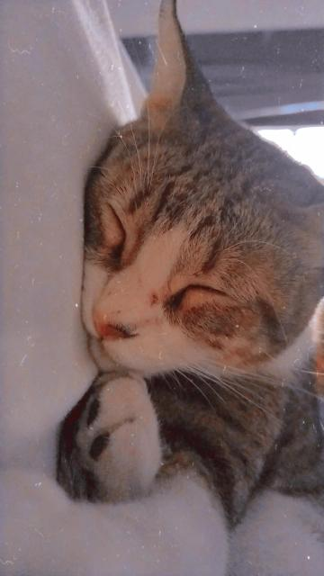
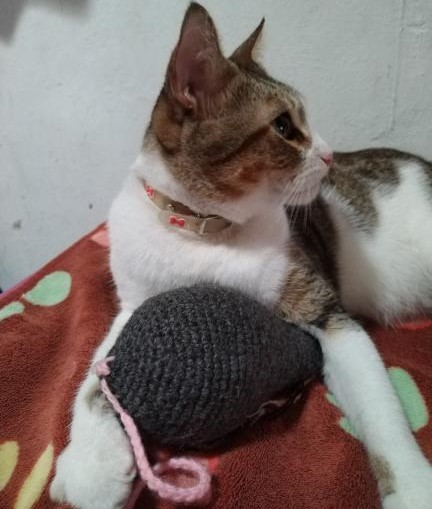
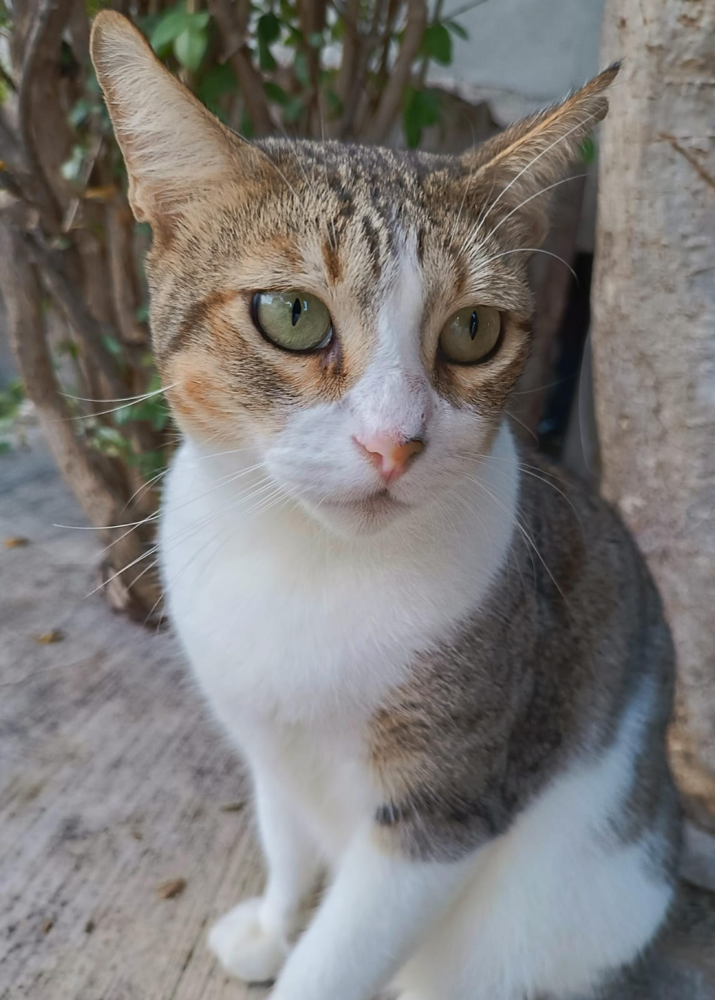
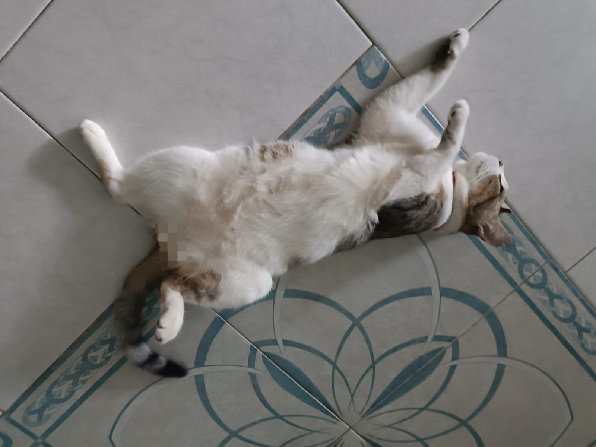
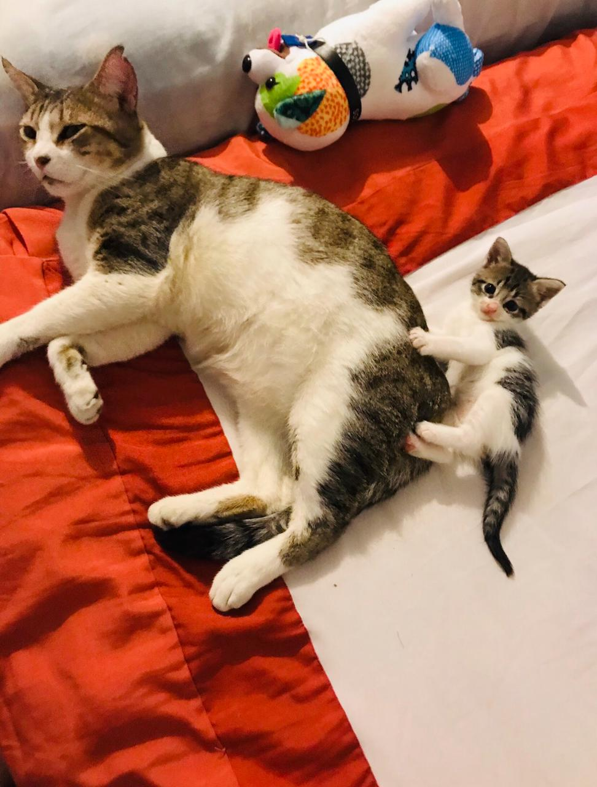

De Tom a Boki-ah?


Hace 6 años, en 2019 para ser exacto; era un gato "bebé" de 3 o 5 meses aproximados y me llamaban "Tom", y era parte de una familia con niños pequeños, a los cuales no sabian respetar a los seres como yo 🐣.

Con el paso de los días, mi curioidad por el mundo exterior crecio y como no me supervisaban, tome la decisión de salir y dar mis primero paseos nocturnos por la zona y sus alrededores 🤗.

Despues de 2 semanas mi familia ya no me daba importancia, ni mi lugar en la familia, es decir me dejaron de atender y prestar atención. Los niños aun "jugaban" conmigo, pero era una forma de juego muy pesada y en defensa propia los mordía y aruñaba, provocando que al final los adultos me castigaran de forma física 😔.

Con el pasar de los días y en paseos nocturnos, comence a seguir a una humana hasta su casa y como aun era pequeño, me dejaba acariciar y cargar 😊✨.

Una segunda vez volví a seguir a esta humana, quien por capricho queria que a fuerza entrara a su casa. Entonces decidí darle la oportunidad de su vida y entrar 🙈.

Al ingresar me dieron las atenciones de un rey, es decir, desde dormir en una cama grande, comer atún y tener agua fresca a mi disposición, así que seguí yendo sin falta por las tardes y me iba en las mañanas 🐈👑.

Al paso de los días me empezaron a llamar "Boki-ah" y se percaton de que por las mañanas iba a casa de los vecinos 😮

Entonces una noche me llevaron cargando a mi "casa" y preguntaron si yo pertenecía ahí 😨.

Por suerte, durante una conversación pacifica se relataron los hechos y la situación que se estaba dando conmigo. En ese momento mi antigua dueña decidio decirle las "travesuras" que hacian sus hijos y la forma en la que me trababan, además de revelar que el señor de la casa ya no queria saber nada mi y con ello, dejarme en brazos de mí nueva familia 😱.

Ahora mi vida como Boki-ah es diferente, llena de comodidades 🤗, con verdadera familia 💕, soy el Niño de la casa 👑 e incluso ahora comparto mi castillo con una intrusa a quien llaman Miyuki 😑.